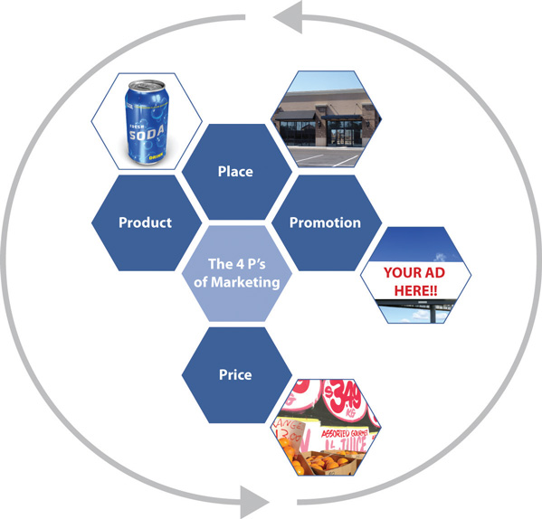
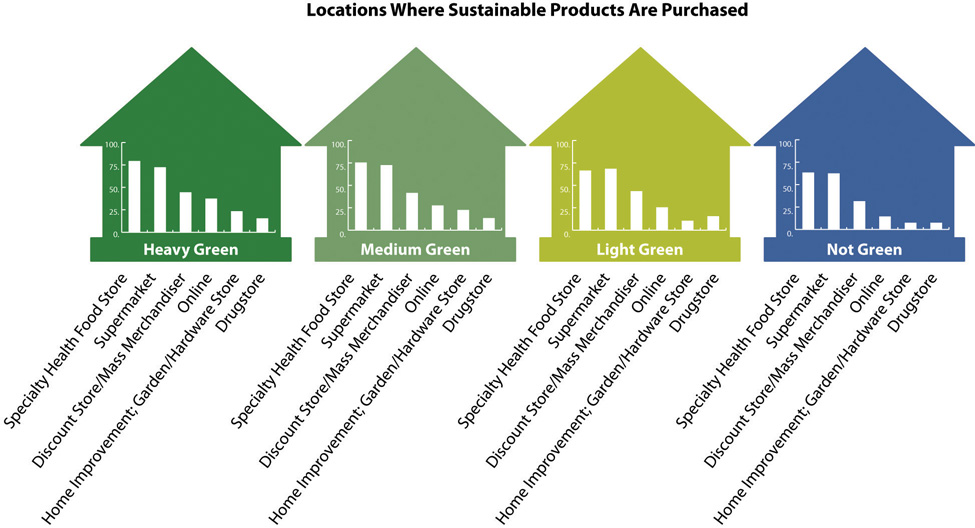

This chapter was written by Diane Devine.
Sustainable marketingInvolves developing and promoting products and services that meet consumer and business user needs utilizing society’s natural, human, and cultural resources responsibly to ensure a better quality of life now and for future generations to come. involves developing and promoting products and services that meet consumer and business user needs utilizing society’s natural, human, and cultural resources responsibly to ensure a better quality of life now and for future generations to come. Sustainable products and servicesAs they are commonly defined are more sustainable than traditional products and services, without necessarily being environmentally neutral or sustainable in a scientifically valid way. as they are commonly defined are more sustainable than traditional products and services, without necessarily being environmentally neutral or sustainable in a scientifically valid way.
The size of the sustainable market is significant and is expected to grow to $922 billion by 2014.“Consumers Claim They Are Willing to Pay Extra for Green,” eMarketer Green, April 1, 2010, http://www.emarketergreen.com/blog/index.php/consumers-pay-extra-green; http://newhope360.com/business-directory/definitions-healthy-products-healthy-planet-hp2-sectors. This represents an increasing but still relatively small portion of the US and world economies, with the size of the US economy being approximately $15 trillion and world economy being about $60 trillion in 2010.
What are some of the marketing strategies that have helped to create this market niche and have helped it to grow? How much can the market grow in the future? This chapter focuses on one company that is a leader in sustainability, Seventh Generation, to address these questions and to gain detailed insight and perspective about sustainable marketing.
Seventh Generation (http://www.seventhgeneration.com/about) is one of the first companies founded on sustainability principles and mission in the United States. It is a Burlington, Vermont–based privately held manufacturer and distributor of environmentally friendly household and personal care products. The company’s marketing vision and marketing mixA planned mix of the controllable elements of a product’s marketing plan commonly termed as the four Ps (product, price, place, and promotion). known as the four Ps—product, price, promotion, and place—emanated from its founding principles and the ideals and aspirations of its founder, Jeffrey Hollender. Seventh Generation’s products are made using only natural, recycled, or renewable materials that use nontoxic ingredients and the company focuses all its operations to minimize its impact on the environment. Initially Seventh Generation started out as a small mail-order company. As of 2011, Seventh Generation was a $150 million brand selling products at eco-focused stores, such as Whole Foods, and also in the broader consumer market at outlets, such as Target and Walmart.
At its core and driving its marketing plans is the company’s mission to enable consumers to make a positive difference for the planet and people’s health through everyday consumer choices. For Seventh Generation, this means providing consumers the opportunity to make a positive difference through their purchases of laundry detergent, paper towels, and other household products.
Figure 8.1 Jeffrey Hollender—Sustainable Visionary, Entrepreneur, Business Leader, Author, and Activist
Source: Flickr, http://www.flickr.com/photos/businessinnovationfactory/2981552844/.
Jeffrey Hollender was born in 1954 and raised in New York City. In many respects his social values and activism grew out of discontent growing up in a wealthy family on Park Avenue in the early 1960s. According to Hollender, “I grew up in ‘Mad Men.’ Everyone was smoking. Everyone was drinking, and I was encouraged to watch TV.” His parents had a beach house on Long Island, in Westhampton, New York, near which he would surf, a welcome escape. “I turned on all that in a pretty rebellious way,” he said.Laura Holsen, “An Environmentalist’s Latest Laundry List,” New York Times, February 23, 2011. At age seventeen, Hollender left home and headed to Santa Barbara, California, where for a short time, he lived in his car. He protested the Vietnam War. He returned to New York City after about nine months, finished high school, and headed to Hampshire College, a nontraditional college in Massachusetts, in 1974.
Hollender’s discontent first motivated him to break the rules and expectations of him in his own life and over time to try to change business and consumer practices. His marketing instincts and savvy might have come from his father, Alfred, an advertising executive with a prestigious New York City advertising firm. And his inclination toward the dramatic might have been from his mother, Lucille, a former actress.
Hollender dropped out of college and began his business career in 1977 by developing a not-for-profit skills exchange program based in Toronto. The program was successful but had to be shut down as a result of Hollender’s personal failing to get a work permit. After spending time on his cousin’s ginseng farm in Vermont, he decided to go back and continue his entrepreneurial career in the education industry, but this time as a for-profit business in New York City. He created Network for Learning, with nontraditional classes such as “The Art of Flirting,” which quickly grew, attracting sixty thousand students and turned a profit by its second year. Mr. Hollender sold the business to a Warner Communications unit for more than $2 million in 1985.“Three Who Thrived after Early Gaffes,” Wall Street Journal, May 4, 2010, http://online.wsj.com/article/SB10001424052748703648304575212151578380586.html. As a result, he became president of Warner Audio Publishing, a division of Warner Communications, a position he held through 1987.
Following his tenure at Warner Audio Publishing, Hollender partnered with Vermont “eco-preneur” Alan Newman and acquired a small mail-order catalogue centered on energy conservation products known as Renew America.Jess McCuan, “It’s Not Easy Being Green,” Inc. Magazine, November 1, 2004, http://www.inc.com/magazine/20041101/seventh-generation.html. This business provided him with the opportunity to change the society he was discontented with and it eventually became Seventh Generation in 1988.
The company’s beginning was not easy, and the partners soon split. But Jeffrey Hollender had passion and kept the company. His values and unique personality moved upfront in the company and dominated its marketing and branding. This helped to differentiate the company and its products in a very competitive market.
“Many of us who have businesses run them within our cultural restraints,” said Yoram Samets, an early investor in Seventh Generation who has known Hollender for two decades. “We compromise ourselves. Jeffrey has done the opposite.”
Fast forward to 2010 and Hollender has served as the president, CEO, and “Chief Inspired Protagonist” of Seventh Generation, building the company to a $150 million brand and a leading authority on making a positive difference in the health of the people and planet through everyday choices. This included Seventh Generation being named the seventh most responsible brand in America in 2004 based on a study performed by Alloy Media + Marketing.Seventh Generation, 2007 Corporate Consciousness Report, http://www.seventhgeneration.com/files/assets/pdf/2007_SevGen_Corporate-Consciousness.pdf. The commitment to sustainability was what their products were about and throughout the company—from founding CEO to product ingredient sourcing through marketing and to the end of the product’s lifecycle. For Seventh Generation as a sustainable brand, the company seeks to have positive impact in the world and do it all transparently.
Seventh Generation’s marketing has focused on offering consumers the opportunity to act on their idealism, passion, and commitment to causes larger than themselves at the supermarket each week. Consumers could get this when they purchased a Seventh Generation product.
Seventh Generation’s Global ImperativesSeventh Generation, 2007 Corporate Consciousness Report, http://www.seventhgeneration.com/files/assets/pdf/2007_SevGen_Corporate-Consciousness.pdf.
1. As a business we are committed to being educators and to encourage those we educate to create with us a world of equity and Justice, health and wellbeing.
2. To achieve that we must create a world of more conscious workers, citizens and consumers.
3. We are committed to creating a world that is rich in value as contrasted to a world that is rich in artifacts.
4. We will work to create Governance and social systems that increase the capacity for understanding differing perspectives and points of view.
5. We believe that our business and all businesses should engage in the personal development of everyone who works for them.
6. We are committed to approaching everything we do from a systems perspective, a perspective that allows us to see the larger whole, not a fragmented, compartmentalized world, not just what we want to see, our own point of view, our own reality, but a world that is endlessly interconnected, in which everything we do effects everything else.
7. We must ensure that globally, natural resources are used and renewed at a rate that is always below their rate depletion.
8. And lastly we are committed to creating a business where all our products, raw materials, byproducts, and the processes by which they are made are not just sustainable but restorative, and enhancing the potential of all of life’s systems.
Seventh Generation derived its name from the Great Law of the Iroquois that states, “In our every deliberation, we must consider the impact of our decisions on the next seven generations.” Seventh Generation strives to live up to that brand promise with a full line of household cleaning and personal care products—from laundry detergents to baby wipes that are safer for people and safer for the environment. This positioning is prevalent within the company and is at the very core of their business model and marketing approach.
Brand
A brand is a name, term, sign, symbol, design, or a combination of these intended to identify the goods and services of one seller and to differentiate the seller from those of other sellers. Branding is about getting potential consumers to view a seller as the only one that provides a solution to their problem. A brand is an image in the consumer’s mind and one that must be constantly fulfilled to remain positive.
According to Seventh Generation, somewhere between 40 percent and 60 percent of all people in the United States have an interest in or are already purchasing some green products. Their market research studies also concluded that new moms, in particular, were more likely than others to purchase sustainable products for their new family to create a healthier home and planet.Romy Ribitzky, “Seventh Generation Embarks on First Ever National Ad Campaign,” Portfolio.com, February 11, 2010, http://bit.ly/NTEMPN. The company’s marketing mix reflected a focus on the “middle greenRepresenting about two-thirds of consumers, these people have good green intentions but are not dedicated to buying only green products and services.” consumers and moms, particularly newer moms.
Survey of Consumers’ Green Intentions
A 2011 study by the consultant group OgilvyEarth“Mainstream America Unmoved by Green Marketing,” SustainableBusiness.com, http://www.sustainablebusiness.com/index.cfm/go/news.display/id/22277. found that 82 percent of Americans have good green intentions but only 16 percent are dedicated to fulfilling these intentions, putting 66 percent firmly in what the report called the middle green. The other two groups the report labeled were the super greens who are the 16 percent who are dedicated to green intentions and on other end of the green consumer spectrum, the 14 percent who were green rejecters who do not have any green intentions.
Figure 8.2

Source: Graceann Bennett and Freya Williams, Mainstream Green (OgilvyEarth, 2011), http://bit.ly/gdpVjL.
The marketing mix, also known as the four Ps of marketing, is the combination of product, price, place (distribution), and promotion. Marketers develop strategies around these four areas in marketing to enhance a company’s branding, sales, and profitability. The marketing mix forms the foundation for creating a sustainable marketing strategy.
The four Ps can contribute to a company’s positioning as focused on sustainability. If a product or service is competitive in terms of price, then a sustainability focus on product attributes, place, or promotion can give that product or service an advantage particularly among those consumers most interested in sustainability, such as super or middle green consumers. Sustainable marketing often requires creativity in marketing different than for traditional products, but at its core is truthfulness about the ecological and social impacts of products and services. The consumers that will be most attracted to sustainable products and services will also tend to be the most scrutinizing about ecological and social impacts and most interested in the truth and transparency.
Figure 8.3
There is significant competition in the household cleaning product industry. The industry is dominated by large brands, such as Procter & Gamble. In this highly competitive market, Seventh Generation’s point of differentiation is that all their products are environmentally friendly, and sustainability is at the very core of the business, not an add-on.
Seventh Generation products include 100 percent recycled fiber paper towels, napkins, bathroom, and facial tissues; natural cleaning and laundry products; natural lotion baby wipes; diapers; training pants; organic cotton feminine hygiene products; and trash bags made from 55 percent to 80 percent recycled plastic. The company is committed to making products that are environmentally sustainable—from seed to shelf.
In 2009, Seventh Generation developed a product scorecard to give consumers (and their product designers) an objective scoring system for comparing different materials and product formulations to foster sustainable decision making. This tool can help consumers balance concerns relating to human health, the environment, product performance, and cost.
In terms of manufacturing, Seventh Generation does not own the facilities that produce their products. They partner with manufacturers across the United States, Canada, and Germany to produce their products for them. Through an extensive auditing process Seventh Generation monitors the manufacturers’ facilities’ electrical use, fuel use, greenhouse gas emissions, water use and discharge, hazardous and nonhazardous waste, and recycling to ensure they are meeting Seventh Generation’s sustainability expectations.Seventh Generation, 2009 Corporate Consciousness Report, http://www.7genreport.com.
The company’s business model relies on partnerships with suppliers, manufacturers, warehouses, and retailers over which they do not have full control, which creates both challenges and opportunities, especially for a company that is committed to practicing sustainability and radical transparency.
To compete effectively and to grow, however, Seventh Generation must be an innovator in the sustainability category and deliver on quality and product performance. The “green” consumer, particularly the middle green consumer, is not just looking for how well a company performs on sustainability criteria but desires a product that meets all their needs.
Part of the product is packaging. Seventh Generation strives to create packaging that has a minimal impact on the environment. This includes reducing the amount of material used by concentrating liquid laundry products, offering refills (so far just for baby wipes, but they are working on expanding this), and redesigning the packaging to use less material. Seventh Generation favors recycled over virgin materials and prefers materials that can be composted or recycled back into the materials stream.
In 2010, Seventh Generation undertook a major packaging initiative to reduce their postconsumer recycled (PCR) content. Previously at a 25 percent PCR content rate, they changed to have the majority of their plastic bottles contain at least 80 percent PCR content, a significant improvement.
Figure 8.4
Source: Seventh Generation.
And in 2011, Seventh Generation sought to “update its tired packaging,” according to new CEO John Replogle (see more details as follows).Marc Gunther, “Seventh Generation’s New CEO,” Marc Gunther, February 13, 2011, http://www.marcgunther.com/2011/02/13/seventh-generations-new-ceo-john-replogle. This included revitalizing its branding look and feel and modernizing its graphics. It started with laundry detergent packaging incorporating the new branding style with more recyclable, compostable, and biodegradable packaging materials (see as follows).
Figure 8.5

Source: Seventh Generation.
The new laundry detergent is a cardboard package with a plastic lining. The new bottle is made from cardboard on the outside and on the inside a plastic like film holds the laundry detergent. Once the bottle is finished, consumers can toss the whole thing out and it’s 100 percent recyclable. The new packaging uses 66 percent less plastic than the traditional format.
While the new packaging is much eco-friendlier, it is being met with mixed reviews. One reviewer observed, “I’m a deeply green inclined person, but there was something about the design that missed the mark, on a psychological level. The lack of a handle made it feel strange to hold. It was only then that I realized how crucial a handle is to my laundry detergent paradigm. The package utilizes pressed recycled paper, which makes the inclusion of a handle quite a challenge.”Paul Smith, “Seventh Generation’s New Packaging Misses Mark,” TriplePundit, April 22, 2011, http://www.triplepundit.com/2011/04/seventh-generations-new-packaging-misses-mark-be.
Seventh Generation needs to remember when it makes product and packaging changes that consumers do not like making tradeoffs. For more universal adoption of green products, manufacturers need to deliver fully on the same, if not better, consumer experience. This includes how well the products perform in their main purpose. For most of Seventh Generation’s products this means how well they clean and how easy they are to use and at what cost.
For consumers to purchase a product or service, the price of the product or service has to be lower than the value consumers derive from the product. For sustainable products with costs higher than traditional products, the additional cost and price for sustainability has to derive benefits commensurate with the additional cost for the consumer to purchase the product. Some of that value can be in the form of reduced energy use and its associated cost savings—for example, with the purchase of a hybrid car or more efficient laundry detergent—and some of the value can be psychological and emotional, such as knowing you are reducing your environmental footprint and contributing to sustainability.
Price can often be a deterrent in purchasing sustainable products or services. Of US consumers, 66 percent view environmentally friendly products as too expensive.GfK Custom Research, “New Report Indicates Green Sensibility Continues to Evolve,” news release, September 21, 2011, http://www.gfkamerica.com/newsroom/press_releases/single_sites/008716/index.en.print.html. Many green products carry a premium, as they can typically be more expensive to manufacture. This is often referred to as the “green price gap.” The green price gap can cause consumers to purchase based on price and not as much on sustainability criteria.
Figure 8.6

Source: Datamonitor Product Launch Analytics cited in http://www.horizons.gc.ca/doclib/2011-0058_eng.pdf.
Recognizing this, Seventh Generation decreased their prices during the slow recovery from the 2008–9 recession to try to help close the green pricing gap. According to Seventh Generation’s Corporate Conscience Report, they were focusing on “right pricing” and experienced improvements. “Reducing our spray cleaner price from $3.69 to $2.99 at Target lifted sales 80 percent. Our Lavender Dish Liquid, priced at $2.69, was the top-selling hand dish washing liquid at Target for 52 straight weeks. When we dropped the price on two sizes of our dish liquid from $3.99 to $3.49 and from $3.29 to $2.99 at Whole Foods Market, our sales increased 30 percent.” “Seventh Generation Corporate Consciousness Report,” Seventh Generation, http://www.7genreport.com/introduction/performance.php. According to Hollender, “Most consumers are not willing to pay a premium, sales are highest when pricing is very competitive.”Jeffrey Hollender, in interview with author, August 14, 2011.
Seventh Generation distributes their products in natural food and grocery stores, through the Internet, and at mass merchandisers, such as Target and Walmart. Consumers who purchase eco-friendly products shop at these retailers, according to a study by Ryan Partnership Chicago / Mambo Sprouts Marketing.Ryan Partnership Chicago and Mambo Sprouts Marketing, One Green Score for One Earth, http://sustainableindustries.com/resources/one-green-score-one-earth.
Figure 8.7
Source: Ryan Partnership Chicago and Mambo Sprouts, http://bit.ly/N702Q0.
In an interview, Hollender revealed that to succeed at retail, their strategy was to make the financial case that the retailer’s profit would be more profitable per foot of space with Seventh Generation than the products on the shelf that they were replacing. Additionally, Seventh Generation presented statistics that they brought higher value and more loyal consumers who spent more money per trip than the average consumer to the store.Jeffrey Hollender, in interview with author, August 14, 2011.
In the early years of Seventh Generation, Hollender and his team relied on word of mouth and grassroots/bootstrap marketingCombines some of the different promotional approaches in a focused, creative, and low-cost way that is often local or community based. It can be particularly useful for start-up ventures. It uses public relations (such as media stories), blogs, social media, and event planning and participation to drive qualified leads to company websites and physical locations for purchases. to increase consumer awareness and encourage consumers to try their products. They did this with educational programs and events where they could encourage trial and help raise consumer consciousness and awareness of their product. Jeffrey Hollender, through his high visibility at events and in charitable and advocacy activities, was personally associated with the brand and his activities were a significant part of the early marketing efforts.
Grassroots Promotion and Marketing
Grassroots promotion and marketing combines some of the different promotional approaches in a focused, creative, and low-cost way that is often local or community based. It can be particularly useful for start-up ventures. It uses public relations (such as media stories), blogs, social media, and event planning and participation to drive qualified leads to company websites and physical locations for purchases.
As of 2011, Seventh Generation’s promotion was still focused on events, advocacy by Hollender, consumer outreach, and educational programs as well as corporate giving. The company donated more than 10 percent of their profits to charitable programs. According to Hollender, the company donated to “the programs and practices that best exemplified Seventh Generation’s innovative approach to solving the problems represented in its global imperatives. This included Change-It, Tampontification, and WAGES.”Jeffrey Hollender, in interview with author, August 14, 2011.
In addition to these programs, Seventh Generation used social media and had an extensive website designed to educate consumers while promoting their products. The joint education and promotion efforts included the use of blogs, Facebook Fan pages, Twitter, and YouTube channels. In addition, the company’s promotional efforts include downloadable coupons from their website site and a loyalty rewards program.
Other marketing initiatives included a joint promotion with noncompetitive but like-minded companies (such as Stonyfield Yogurt and Earth’s Best) with a coupon booklet distributed in stores on packages via neckties.
In 2010, Seventh Generation briefly ran their first ever television advertising and print campaign, “Protecting Planet Home,” focused on the super and middle green consumers and new moms.“Seventh Generation Kicks Off Protect Planet Home Campaign,” Causecast, January 13, 2010. http://causecast.org/blog/green-cleaning/seventh-generation-kicks-protect- planet-home-campaign. The advertising efforts were very short lived and pulled from the air and their website after the departure of Hollender.
The household cleaning product market was hard to penetrate. With all the marketing efforts, Seventh Generation still had a reported low level of brand awareness with only 10 percent to 20 percent of the population aware of their products.
Jeffrey Hollender desired to grow Seventh Generation from a $150 million brand to $1 billion. How realistic was this?
According to the “‘Green’ Household Cleaning Products in the US: Bathroom Cleaners, Laundry Care and Dish Detergents and Household Cleaners” report published by Packaged Facts, retail sales of green cleaners in 2009 totaled $557 million—split between $339 million from green household cleaning products and $218 million from green laundry products—to account for 3 percent of the total household and laundry cleaner retail market. Packaged Facts estimated retail sales of green cleaners grew 229 percent between 2005 and 2009, more than doubling in dollar terms and more than tripling in its share of the total household cleaner market.“‘Green’ Household Cleaning Products in the U.S.: Bathroom Cleaners, Laundry Care and Dish Detergents and Household Cleaners,” Packaged Facts, http://www.packagedfacts.com/Green-Household-Cleaning-2554249. In 2009, Seventh Generation’s sales were $150 million with about a 27 percent share of the green household cleaning market.Laurie Burkit, “Seventh Generation Protecting Its Turf,” Forbes, January 18, 2010, http://www.forbes.com/2010/01/18/seventh-generation-brand-awareness-cmo-network-chuck-maniscalco.html.
Figure 8.8
Source: eMarketer Green, http://www.eMarketerGreen.com
As Seventh Generation’s sales first began to grow, larger traditional brands began to notice. And several powerful mainstream marketers launched green household products, including the following:
Jeffrey Hollender, commenting about the competition, said, “Competition is definitely a sign of our success especially in the face of categories that simply weren’t growing for our competition.” Over time, both SC Johnson’s Nature’s Source and Clorox’s Green Works failed to meet the sales goals set by the parent companies,Jeffrey Hollender, in interview with author, August 14, 2011. and Seventh Generation was able to maintain its market share while competitors were experiencing a flattening out in performance since their introductory years.
According to an analysis by Stephen Powers from Sanford C. Bernstein & Company, “You see disproportionately negative impact from products like Green Works, out of the big blue-chip companies that have tried to layer a green offering on top of their conventional offering, and a relatively better performance from the niche players who remain independent.” Using data from the Nielsen Company, Bernstein looked at sales for nearly 4,300 items in twenty-two categories, such as cleaning spray, liquid soap, bathroom cleaners, and detergents. It studied monthly sales from March 2006 to March 2011, the most recent data available. (Nielsen’s data include mass market, grocery stores, and drugstores but exclude Walmart.) Bernstein found that the market shares of green products generally were down from their peak—especially those offered by the big consumer-products companies. But the market share of the independent brands, like Method and Seventh Generation, were starting to increase relative to the shares of traditional brands’ green products in categories where they compete.Jeffrey Hollender, in interview with author, August 14, 2011.
There were several factors at play. The mainstream companies venturing into green territory approached it much like a traditional consumer packaged goods company. They spent big money on advertising and promotion to generate awareness and trial but after the second or third year pulled back to almost zero spending. In contrast, Seventh Generation had over two decades to build its brand. But there has to be more to it than that. Consumers may not be looking to buy just a green-looking brand from a large consumer packaged goods company but instead want to purchase green products from companies who are more substantively committed to sustainability and adhere to its principles with all their brands, not just one or two product lines. Again, this is Seventh Generation’s primary competitive advantage and it was working for them but not enough to grow as large as their founder desired.
Seventh Generation declined in gross sales for the first time in a decade in 2009. The economic recession was a significant challenge for Seventh Generation as consumers tightened their budget and were more reluctant to pay a price premium for sustainable products. After averaging double-digit annual growth for ten years, the company’s gross sales declined by 2.8 percent. The company also lost consumer loyalty with a packaging change in 2009, which created less value for the consumer and did not adhere to their strict sustainability standards. Seventh Generation reduced the number of baby wipes in their packages without reducing the size of the package, decreasing the sustainability of the product (by increasing the packaging-to-product ratio 12 percent). When they did not adequately inform consumers of this change, consumers felt cheated and it weakened the authenticity of the brand and their trusted consumer relationship.
In the midst of the 2009 problems, Jeffrey Hollender self-selected his succession heir and hired a consumer packaged goods veteran, Chuck Maniscalco, as CEO to help position the company for greater scale and long-term growth.“Big Changes at Seventh Generation,” 7Gen (blog), June 1, 2009, http://www.seventhgeneration.com/learn/blog/big-changes-seventh-generation. But in September 2009, Chuck Maniscalco resigned after a very short but difficult period in which it was hard for Hollender to reduce his influence on the company.
Then in October 2010, the board of directors voted to terminate Jeffrey Hollender’s employment relationship and began a new search for CEO.Marc Gunther, “Seventh Generation Sweeps Out Its Founder,” Marc Gunther, November 1, 2010, http://www.marcgunther.com/2010/11/01/seventh-generation-sweeps-out-its-founder. In February 2011, Seventh Generation hired a new CEO, John Replogle, who was previously president and CEO of Burt’s Bees.Alex Goldmark, “Seventh Generation Snags Burt’s Bees CEO to Replace Founder,” Good Business (blog), February 10, 2011, http://www.good.is/post/seventh-generation-gets-a-new-ceo-john-replogle-from-burt-s-bees.
It has been stated that the problem at Seventh Generation was that the growth plans and Hollender’s founding values did not converge. At the Sustainable Brands 2011 trade event, Jeffrey Hollender, in his own words, said,
How did I fail? How did I get myself fired?
During his time at Seventh Generation, Jeffrey Hollender made the decision to bring on investors to help financially sustain the business. Hollender sold shares and created a board of directors, including his long time childhood friend, Peter Graham, the board chairman. It was an important move to help the company grow long term but resulted in him becoming a minority stakeholder. It’s not clear whether his childhood friend Graham backed Hollender in the power struggle at Seventh Generation or turned against him. Unfortunately, Hollender, after twenty-two years with Seventh Generation, found himself out from the very company that he began.
Hollender was shocked to say the least. He reflected on this change recently: “Seventh Generation was my identity, and getting fired was like having my identity stolen away from me. Most people couldn’t understand how I got thrown out of my own company. They didn’t know that as we raised more equity, I became a minority owner. After that, there were always tensions between social mission and making money.”Issie Lapowsky, “What to Do When You’re Fired from the Company You Started,” Inc. Magazine, July/August 2011, http://www.inc.com/magazine/201107/how-i-did-it-jeffrey-hollender-seventh-generation.html.
In Graham’s letter to shareholders and employees, he said,
As the leader of the company since its very earliest days and its philosophical guiding light for over two decades, Jeffrey has been an integral part of our brand and an obvious lynch pin of our success, our unique corporate spirit, and our much acclaimed emphasis on equity and justice in the way we conduct our business. It is no overstatement to say that without his unwavering dedication to our cause and his tireless efforts on our company’s behalf, we would not be the company we are today, and indeed might not be here at all. His is a legacy worthy of the highest respect and admiration, and nothing in our recent decision should dim that in any way.
Nevertheless, recent events have forced us to choose between divergent paths. We have elected to set the company on the one we strongly feel has the very best chance of fulfilling the commitment we’ve made to all our stakeholders to achieve the greatest possible lasting success, financially but especially in terms of making our world a better, safer place for our children and the following seven generations.Marc Gunther, “Seventh Generation Sweeps Out Its Founder,” Marc Gunther, November 1, 2010, http://www.marcgunther.com/2010/11/01/seventh-generation-sweeps-out-its-founder.
Peter Graham, Seventh Generation’s chairman, said that the Seventh Generation board unanimously selected Replogle based on his track record leading a complex organization, his demonstrated commitment to corporate responsibility, as well as his strong executive and personal qualities.Seventh Generation, “Seventh Generation Names John Replogle to Serve as CEO and President,” news release, February 9, 2011, http://www.csrwire.com/press_releases/31571-Seventh-Generation-Names-John-Replogle-to-Serve-as-CEO-and-President.
Figure 8.9

Source: Marc Gunther, http://www.marcgunther.com/2011/02/13/seventh-generations-new-ceo-john-replogle/.
Hollender continues his leadership role in sustainability and is writing a new book. He is also the cofounder of the American Sustainable Business Council and a member of the board of directors of Greenpeace USA, Verite, Vermont Businesses for Social Responsibility, and the Environmental Health Fund. He speaks frequently at national venues and has advised companies on sustainability. He has published six books, including Naturally Clean, The Responsibility Revolution, and Planet Home.
The new Seventh Generation CEO faced many challenges. The company needed to ramp up its marketing efforts to break through and get noticed in the middle green market and to increase the company’s brand awareness, which remained low. Also, among some of their super greenConsumers dedicated to buying products and services with commitment to the highest sustainability standards and practices. They represent about one in six consumers. customers, effective marketing would be essential to reestablish consumer trust and interest in Seventh Generation after a difficult couple of years. All of this would likely require use of marketing mediums, such as television and the print media, with broader reach than special events, educational programs, and charitable programs.
To help marketing, Replogle created a new position of chief marketing officer (CMO) and hired Joey Bergstein, who hailed from Diageo, the world’s leading premium spirits company. Bergstein started his career with consumer packaged goods giant Procter & Gamble and was senior vice president of global rum at Diageo where in five years he helped to double sales while growing Captain Morgan from a US product into a global brand with a strong international presence.Steve Ratti, “Seventh Generation Adds New Chief Marketing Officer,” The Ratti Report, August 18, 2011, http://ratti-report.com/news-new-cmo/seventh-generation-adds-new-chief-marketing-officer.
In marketing and other areas, it will not be easy to follow Seventh Generation’s founder Jeffrey Hollender. Replogle’s strengths are his leadership skills, demonstrated commitment to corporate responsibility, and a proven track record in his business career. Prior to being CEO of Burt’s Bees, Replogle spent three years at Unilever, where he managed the skin care division and helped to launch the Real Beauty campaign for Dove and establish the Dove Self-Esteem Fund for young girls. Prior to Unilever, he spent eight years with Diageo as president of Guinness Bass Import Company and managing director of Guinness Great Britain. He started his career at Boston Consulting Group after he earned an MBA from Harvard, from which he graduated with distinction. He received his undergraduate degree, a BA in government, from Dartmouth College where he currently serves as a trustee.“About John,” John Replogle for Dartmouth Trustee, http://www.john4dartmouth.com/p/about-john-replogle.html.
According to Seventh Generation’s board chairman, Peter Graham, Replogle had been charged with “ensuring Seventh Generation’s untapped business potential is fully realized in the years ahead, both financially and in our continued efforts to make our world a safer place for our children and the next seven generations.”Marc Gunther, “Seventh Generation’s New CEO,” Marc Gunther, February 13, 2011, http://www.marcgunther.com/2011/02/13/seventh-generations-new-ceo-john-replogle. This would include how to grow Seventh Generation from a $150 million business. In order to do this, Replogle believed the company must innovate and refresh the tired worn out brand look making it more relevant to consumers. In a recent interview, Replogle said, “We are going to out-innovate the competition in terms of meeting consumers’ needs in an environmentally-friendly way.”Marc Gunther, “Seventh Generation’s New CEO,” Marc Gunther, February 13, 2011, http://www.marcgunther.com/2011/02/13/seventh-generations-new-ceo-john-replogle. With innovation, the company must ensure that its products fully deliver on consumers’ needs and provide a fair price and strong value proposition that neutralizes any green pricing gap.
What is not going to change according to company spokesperson, Dave Rappaport, senior director of corporate consciousness, is the company’s deep commitment to corporate social responsibility and sustainability. Rappaport, who was hired by Hollender after working in the nongovernmental organization world, stated, “Although the company was launched by Jeff’s vision, it is embraced by everyone here. It has been a part of everybody’s perception of his or her roles. Down to the innovations we’ve created on sustainability and corporate responsibility, you will find the work of employees who took the vision to heart.” He continued by stating that since letting Hollender go, the board of directors had approved the creation of a new committee on corporate social responsibility and sustainability. “With Jeffrey’s departure [they] know [they] have to institutionalize all of the things” he advocated for, making sure there is management oversight and “continued direct board oversight which there was through him when he was on the board.”Alex Goldmark, “Hollender Speaks on What’s Next for Seventh Generation,” Good Business (blog), January 18, 2011, http://www.good.is/post/jeffrey-hollender-on-how-to-hold-seventh-generation-accountable.
Inherent in the culture that Hollender built is radical transparency. So consumers will be watching. With the foundation that Hollender and his team created, the company could continue to be part of a trend, even a near revolution, to nurture the planet and the health of the next seven generations, or it could lose its market presence and relevance.